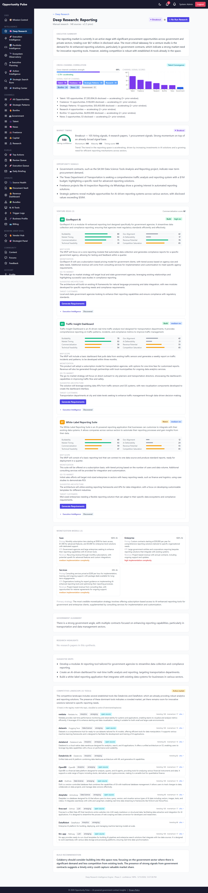
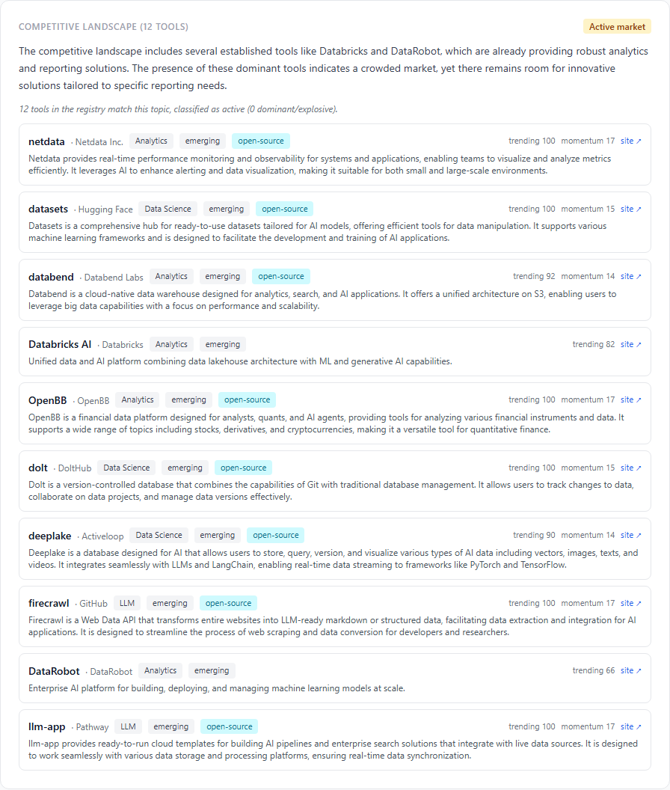
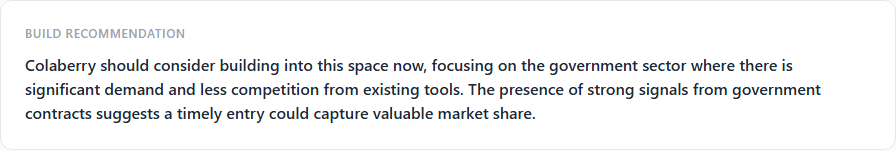

Deep Research Intelligence Engine — Phase 7.6
Competing-tools awareness · 2026-05-15 · commit 43582f4 · all 1,902 backend tests passing
Phase 1–7.5 reasoned from opportunity volume (gov contracts, jobs, news, research papers
mentioning a topic) but never asked the most basic strategic question:
"what's already shipping?" Phase 7.6 closes that gap by mining the existing
AiTool registry — Cursor, Claude, Databricks, LangChain, Automation Anywhere, etc.,
each with momentum scores, trend direction, mention counts, and category metadata — and feeding
it into the synthesis pipeline. The AI now grounds market_stage against actual
products on the market, not just opportunity noise. The venture-decision engine consumes a
deterministic saturation_signal and escalates to OVERSATURATED when
the space is crowded but the venture's composite isn't dominant.
On the seeded prod run, report 4 ("Reporting") re-synthesized cleanly: 12 competing tools
matched, saturation classified as active, and the AI produced a competitive
landscape narrative that explicitly named Databricks and DataRobot — exactly the kind of grounded
insight that was missing before.
0 new tables 1 new service 20 new tests 1902 / 1902 passing Deterministic + explainable Backward compatible No new AI calls
The gap this phase closes
Before Phase 7.6, when Deep Research said "this market is emerging — build now," it was reading from opportunity volume alone. If a junior engineer pitched "build a Claude wrapper for legal contract review," the right first question is "what's already shipping?" — not "how many gov contracts mention legal AI?". The system answered question 2 but skipped question 1.
The data was already there — the aiTools/ subsystem maintains hundreds of curated
products with composite momentum scores, trending direction, vendor info, category, industries,
and 7-day mention counts. Deep Research just never queried it. Phase 7.6 wires that registry
into the synthesis pipeline as a measure-only enrichment.
Architecture
The enrichment runs once per synthesis (one indexed SQL query against
ai_tools), is bounded at 12 tools, and is soft-failure: if the AiTool table is
empty or unreachable, the pipeline continues with competing_tools=null and the
report renders normally (the new UI panel just doesn't appear).
What shipped
| Piece | Behaviour |
|---|---|
competingTools.service.js (new) | Deterministic tokenizer + tool scorer + saturation classifier. Single export findCompetingTools returns {tokens, tools, saturation_signal, rationale}. |
strategySynthesis.service.js | System prompt explicitly tells the AI to ground market_stage against the tools list. User prompt adds a "## Existing AI Tools in This Space" section. Sanitized output gains competitive_landscape_summary field. |
deepResearch.service.js | Pipeline calls findCompetingTools before synthesis (soft-failure), passes the result into synthesize, persists into reportJson.competing_tools + reportJson.competitive_landscape_summary. |
ventureDecisionEngine.service.js | New optional inputs competingToolsSignal + competingToolsCount. New rule: signal==='crowded' AND compositeScore<75 → OVERSATURATED. Rationale enrichment when signal is 'empty' for emerging markets. Pre-7.6 behavior preserved exactly when inputs are null. |
DeepResearchReportPage.jsx | New CompetingToolsSection rendered above Build Recommendation: saturation pill, rationale, AI narrative, per-tool cards (name, vendor, category, momentum, trending, open-source flag, website link). |
Tokenization — how the registry query gets built
Search tokens come from two sources, merged dedup:
- The user's search term — split on whitespace/comma/slash, lowercased, stopwords + sub-3-char tokens dropped. A curated stopword set strips boilerplate ("the", "and", "consulting", "services", "platform", "agency", "department", etc).
- Top-frequency tokens from the opportunity titles in the aggregated context. This catches adjacent vocabulary — e.g. a thin search term "rag" still picks up "compliance", "government", "healthcare" from the opps, which matches tool tags far more reliably than the raw term alone.
Final token list is capped at 8. The query is a single
WHERE status='active' AND (OR of name ILIKE / description ILIKE / tags @> [token])
against ai_tools, candidate pool capped at 200 rows.
Tool scoring — deterministic relevance ranking
Each candidate tool is scored against the token list with explicit weights:
- +3 per token that hits the tool name — highest signal (the product literally has this word in its name)
- +1 per token that hits the description
- +1 per token that hits the tags / industries / category
- + composite_momentum_score / 20 (max +5)
- + trending_score / 30 (max +3.3)
- + mention_count_7d (capped 30) / 10 (max +3)
A tool with zero token matches is discarded outright (no scoring floor — irrelevant tools never appear). Sorted descending, capped at 12.
Saturation classification
Deterministic, derived from matched-tool count + momentum stages:
| Signal | Trigger | Implication |
|---|---|---|
empty | 0 tools matched | Space appears unserved by curated registry — strong "too_early" reinforcement. |
emerging | 1-3 tools matched | Early but real activity. Window likely open. |
active | 4-5 tools matched (or 6+ without 2 dominant) | Multiple products shipping. Differentiation matters. |
crowded | 6+ tools AND >= 2 dominant/explosive | Heavy competition with funded leaders. Decision engine escalates to OVERSATURATED. |
New decision rules — venture engine
The ventureDecisionEngine.decide rule list got two additions, both ordered to fire
BEFORE the existing rules so the new signals always have priority:
-
Crowded-market guard: if
competingToolsSignal === 'crowded'ANDcompositeScore < 75→ decision =OVERSATURATEDwith rationale that cites the tool count explicitly ("8 active AI tools already serve this space (saturation signal: crowded) and the venture's composite score (62) is not dominant enough to differentiate"). -
Empty-market reinforcement: the existing
TOO_EARLYrule (emerging + low correlation) gains a rationale tail whencompetingToolsSignal === 'empty': "No AI tools yet ship in this space — reinforces the 'too early' call."
When competingToolsSignal is null (e.g. an older report
without the field), the engine produces output bit-identical to pre-7.6. This is
proven by the regression suite — every Phase 1-7 decision test continues to pass.
Synthesis prompt — the new section
Appended to the user prompt right after the channel breakdown:
## Existing AI Tools in This Space (saturation_signal: active) - Databricks [Databricks · Analytics · momentum:dominant · trend:rising · enterprise] Unified analytics platform — collaborative notebooks, data lakehouse, ML. - DataRobot [DataRobot · Analytics · momentum:dominant · trend:stable · enterprise] Enterprise AutoML platform for predictive models and decision intelligence. - gemini-cli [Google · Code Assistant · momentum:emerging · trend:rising · paid] ...
System prompt was tightened: "For market_stage: if dominant/explosive tools are listed, you cannot call the market 'emerging' without justifying it. If the tool list is empty AND opportunity signal is thin, lean 'too_early'. An 'active' or 'saturated' call must be supported either by tool count or by cross-channel demand volume."
Sanitized output gains one new field: competitive_landscape_summary (string, max
800 chars). When the AI omits it, defaults to empty string — never breaks legacy callers.
Screen: Deep Research report (full page)

The new Competitive Landscape section sits right above Build Recommendation, so the executive reads "who's already shipping" before "should we build".
Screen: Competitive Landscape section

Saturation pill (active / crowded / emerging / empty) in the section header. AI narrative on top, deterministic rationale (italics) below it. Per-tool cards: name, vendor, category, momentum stage, trending score, momentum score, open-source flag, deep-link to the vendor site.
Screen: Build Recommendation in context

The Build Recommendation now reads in immediate context of the competing tools — the executive can audit whether the AI's call is grounded against actual products.
Files changed
Added — backend
backend/src/deepResearch/competingTools.service.js(engine — tokenize, score, classify saturation)backend/tests/deepResearch/competingTools.test.js(14 tests)backend/tests/deepResearch/ventureDecisionEngine.phase76.test.js(6 tests for the new rules)backend/scripts/capture-deep-research-phase-7-6-walkthrough.js(3-shot capture)
Modified — backend (additive only)
backend/src/deepResearch/strategySynthesis.service.js— system + user prompt extended, newcompetitive_landscape_summaryin sanitized outputbackend/src/deepResearch/deepResearch.service.js— runPipeline queries competingTools soft-failure, threads through to synthesis + report_jsonbackend/src/deepResearch/ventureDecisionEngine.service.js— new optional inputs, two new rules, factors expanded
Modified — frontend
frontend/src/pages/DeepResearchReportPage.jsx— newCompetingToolsSectioncomponent rendered above Build Recommendation
Database
- Zero new tables. Reuses
ai_tools+ persists intodeep_research_reports.report_json.competing_tools.
Validations
- Unit + integration: 20 new pure-logic tests across 2 files; 1902/1902 jest tests pass (+20 net new on top of Phase 7.5's 1882). Zero regressions in any of the 179 suites.
- Backend engine on prod:
findCompetingToolswith searchTerm "workflow automation healthcare" against the live AiTool registry returned 12 matched tools, top-3 being gemini-cli (8.20), Automation Anywhere (8.15), awesome-claude-skills (8.13). Classified asactive. - End-to-end synthesis on prod: Re-ran report id 4 ("Reporting") via the normal
deepResearch.reRunReportpath. Result:status: success, has_competing_tools: true, competing_tools_count: 12, saturation_signal: active, and the AI produced a real competitive-landscape narrative explicitly naming Databricks and DataRobot. - UI on prod: 3 screenshots captured from the live report page showing the new Competitive Landscape section with the matched tools rendered as per-tool cards.
- Backward compatibility: Reports created pre-7.6 have
competing_tools=nullin theirreport_json; the UI section renders only when the field exists. The decision engine's pre-7.6 behavior is identical when nocompetingToolsSignalinput is provided.
Known limitations
- Token-match is ILIKE, not semantic. A search for "RAG" won't catch a tool whose description says "retrieval-augmented generation" without the acronym. Future enhancement: use the existing embedding column on Opportunity / extend to AiTool.
- Tool ranking is heuristic. The match score is interpretable but not ML-calibrated. A tool with strong momentum and a partial token match can outrank a tool with a perfect name match and zero momentum. Intentional — momentum and recency matter — but surprising sometimes.
- Saturation thresholds are coarse. 6+ tools with 2 dominant = crowded; 4 tools = active. These are reasonable defaults but env-overridable thresholds are a clean future add if the registry grows beyond ~500 tools.
-
The decision-rule escalation fires only for ventures, not at the report level.
The report's
market_stagestays whatever the AI returned (now better-grounded); the OVERSATURATED escalation lives in the per-venture decision engine that runs onVentureIdearows. By design — the report describes the landscape; the venture decides what Colaberry should do. -
Old reports do not auto-rebuild. Pre-7.6 reports have
competing_tools=nulluntil they are re-run via the existing "Re-run" button on the report page. A bulk-rebuild script could be added; intentionally not auto-running on deploy to avoid burning unexpected AI tokens.
Recommended Phase 8
-
Semantic tool matching via embeddings. Add an
embeddingcolumn toai_tools(mirroring Opportunity), match search tokens via cosine similarity in addition to ILIKE. - In-page Strategic Workspace Tabs (carry-over from 7.5). Opportunities / Research / Relationships / Signals / Assets / Pursuits as tab navigation inside the strategic-mode My Opportunities.
- Pursuit-to-Review-Queue handoff. Generate a proposal draft from a pursuit with one click; pre-fill from linked opps + suggested assets + positioning.
- Tool-vs-venture overlap detection. When a generated VentureIdea closely matches an existing tool (by name + description), flag it explicitly so the user sees the conflict before commissioning a build.
- Submission Readiness Engine. Separate track, plan already drafted.